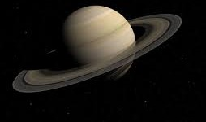

Главная

Колонизация планет Cолнечной системы и их спутников |
|||||||||||||||||||||||||||||||||||||||||||||||||
|
Сатурн Параметры:
К сожалению, колонизировать сам Сатурн вряд ли удастся, ведь у этой планеты нет твердой поверхности (Сатурн относиться к газовым гигантам). Но есть проекты постройки «парящих городов» в атмосфере Сатурна. Также возможна постройка баз по добычи на Сатурне полезных ресурсов. Но у Сатурна множество спутников, которые можно колонизировать, а Сатурн использовать как огромный источник сырья и энергии для поддержания жизни на спутниках. Спутники Сатурна— естественные спутники планеты Сатурн. У Сатурна известно 82 естественных спутника с подтверждённой орбитой; это наибольшее число открытых спутников среди всех планет Солнечной системы; 53 из них имеют собственные названия. Большинство спутников имеет небольшие размеры и состоит из каменных пород и льда, поэтому их вряд ли когда-то удастся полностью колонизировать. Но есть и более крупные, которые и являются одними из кандидатов на колонизацию. У Сатурна таких спутника два:
Колонизация спутников СатурнаКолонизация ТитанаТитан является одним из кандидатов на колонизацию во внешней части Солнечной системы. Одна из причин интереса к колонизации спутника — наличие на нём углеводородов, на которых в настоящее время работает большая часть земной техники (жидких углеводородов на поверхности Титана в сотни раз больше, чем нефти и природного газа на Земле). В процессе колонизации Титана также следует учитывать возможность наличия жидких органических соединений и даже некислородной жизни. Его колоссальные запасы углеводородов могли бы служить отличным источником энергии для потенциальных колонистов, которым не нужно будет беспокоиться о космическом излучении благодаря плотной атмосфере. Атмосфера Титана настолько плотная, что полёты над Титаном станут основным способом передвижения. Её давление равно тому, которое испытывают на себе дайверы на глубине 5 метров под водой. Вместе с её температурой, это требует использования скафандров. Ещё одна проблема — наличие в ней цианистого водорода, который может убить человека за несколько минут даже при таких низких концентрациях. Однако это не мешает Титану считаться самой перспективной целью колонизации во внешней Солнечной системе. Титан являет собой идеальное место для выживания человека. Вода и метан, имеющиеся на Титане, могут быть использованы и как топливо для ракет, и для обеспечения жизнедеятельности колонии. Так как углеводороды на Титане выпадают в виде дождей и собираются на его поверхности в целые водоемы, их добыча будет значительно упрощена, поскольку для этого не понадобится строительство специальных буровых приспособлений или шахт. Однако сегодня их транспортировка на Землю не целесообразна по экономическим причинам. По поверхности очень трудно передвигаться, поэтому планируется создание специальных механизмов. Один из наиболее ранних проектов конструкции летательного аппарата для атмосферы Титана — монгольфьер. Чертежи отдельных образцов стали появляться ещё в 1970-е годы. Так, образец, предложенный учёными NASA в 1976 году, имел полётный вес 29 кг при диаметре 9,7 м и объёме шара 482 м³, в качестве топлива для него планировалось использовать тетраоксид диазота. Стоит, однако, заметить, что этот ранний проект не предназначался для длительных полётов — его время полёта по расчётам не должно было превысить 2 часов 30 минут. В настоящее время концепция не утратила своей актуальности. Очень высокая плотность атмосферы Титана говорит о том, что размер крыльев для летательных аппаратов должен быть меньше, чем на Земле. Также есть проекты постройки специальных Дирижаблей.
Колонизация ЭнцеладаОдин из плюсов этого спутника заключается в том, что атмосфера Энцелада возобновляется благодаря гейзерам, выпускающим газ и на этом небольшом спутнике, в недрах, имеется жидкая вода и допускается наличие жизни. Но люди не смогут долго прожить там: об этом говорит и высокий уровень радиации, и мощные вулканические извержения, которые происходят постоянно. К тому же «почва» спутника мертва, и выращивать что-то нет возможности. Человечеству, даже в том случае, если колонизация Энцелада произойдет, придется столкнуться с голодом, тяжелыми климатическими изменениями и заболеваниями. Об этом «говорят» последние данные: почва спутника Сатурна мертва. Кроме того, спутник движется по кольцам планеты, которые состоят из радиоактивных обломков. Людям придется дышать космической пылью, что неизменно приведет к повальным болезням. Если человечеству и удастся прожить чуть больше, то через десятилетие не останется и следа от цивилизации. Но можно прорубить 2-х километровые скважины к подводному океаны луны Сатурна, что позволит колонизаторам спастись от вымирания. А вообще, полёт человеческого экипажа будет вероятнее всего предварён роботоэкипажем, для лучшего изучения возможности создания обитаемых поселений. Плюсы и минусы колонизации спутников СатурнаВсе спутники Сатурна очень далеки от Земли, дальше даже чем спутники Юпитера. Энцелад же находится в кольцах газового гиганта. К ним доходит очень мало солнечной энергии, поэтому придется использовать ядерные двигатели при полете к этим лунам. Да и сам полет будет долгим и сложным для земных исследователей. Также для колонизации спутников Сатурна необходимы технологии, которые либо очень дорогие, либо еще не существуют. НО! Но, если всё-таки получится колонизировать их, то это позволить изучать более далекие объекты в режиме реального времени. Также станет возможным постройка баз по добыче сырья с Сатурна. Это будет огромный толчок для колонизации других тел Солнечной системы. ВыводыКолонизация Сатурна и его спутников – это очень трудно осуществимый проект, а на настоящее время и невозможный. Но при развитии технологий все ближе подходит момент, когда человечество будет осуществлять свои проекты. И тогда у него появиться огромный источник сырья в виде целой планеты Сатурн. А также и несколько мест, на которых можно будет остановиться. |

Сатурн 
Титан 
Энцелад 
|
||||||||||||||||||||||||||||||||||||||||||||||||

© Сайт проекта колонизации планет Солнечной системы 2020 -
|
|||||||||||||||||||||||||||||||||||||||||||||||||